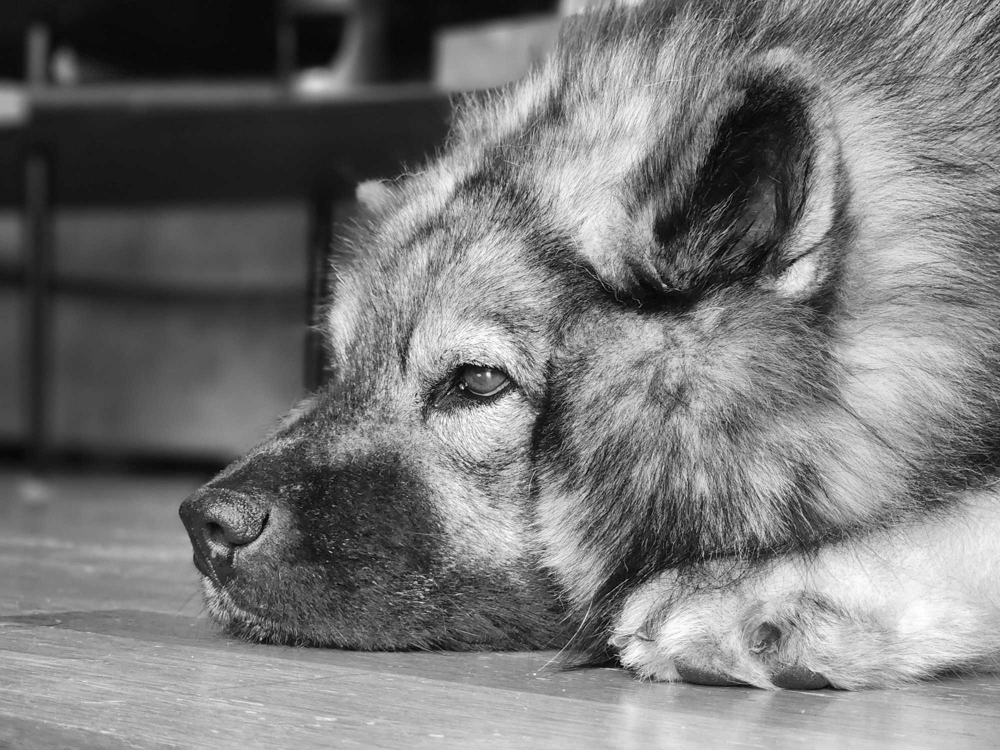
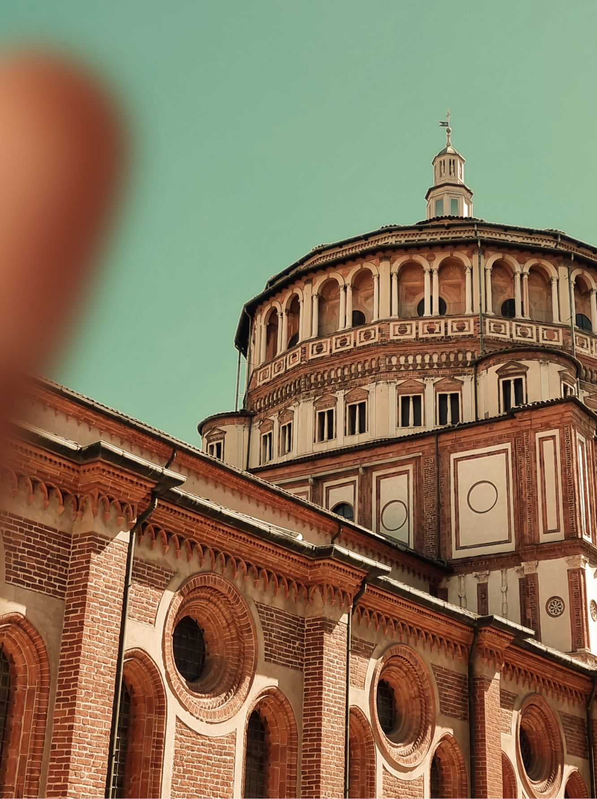

Bild Redigering
Här visas tre av mina utvalda bilder före och efter redigering, samt en beskrivning av vilka justeringar som har gjorts.
Bild 1 bortagning av objekt &


Gjorda redigeringar: I den här bilden har jag först duplicerat bildlagret i Photopea, ändrat bildens bredd till 2000 px med bildbehållna propotioner och beskurit bilden. Eftersom originalet var en svartvitt bild skapade jag två nya lager för färgläggning ett för golvet och ett för hundens öga. För golvet använde jag trollstavsverktyget (Magic Wand) för att avgränsa hunden från bakgrunden och färgade sedan ytan med penselverktyget(Brush Tool). För att ge bilden mer liv markerade jag även hundens öga med ploygonalassot(Polygonal Lasso) och målade i det med penselverktyget. Genom att zooma in och justera penselns storlek kunde jag fylla i även de små detaljerna noggrant.
Bild 2 bortagning av objekt & clona


Gjorda redigeringar: Även här arbetade jag i Photopea genom att först duplicera originalbilden, justera bildbredden till 2000 px med bibehållna proportioner och beskära bilden. I originalet fanns ett suddigt objekt (likt ett finger ur fokus) i förgrunden som jag har tagit bort. För de släta bakgrundsytorna använde jag en rund, kornig pensel (Round Noisy Brush) för att måla över oskärpan, medan jag använde lagningsverktyget (Patch Tool) för att ersätta mer detaljerade delar med liknande struktur från omgivningen. Avslutningsvis gjorde jag en mindre justering av exponeringen (Exposure) för att balansera ljuset i bilden.
Bild 3 Färgprofil & beskärning


Gjorda redigeringar:Även här arbetade jag i Photopea genom att först duplicera originalbilden, justera bildbredden till 2000 px med bibehållna proportioner och beskära bilden. Katten hade ett cyanfärgat öga i originalet, så med hjälp av nyans och mättnad (Hue/Saturation) justerade jag ögonfärgen. Avslutningsvis lade jag till ett exponeringslager (Exposure) och sänkte offset-värdet något eftersom bilden hade lite låg kontrast och svag färgmättnad.